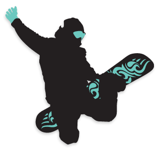

人生就如滑雪
过去不懂得生活，以为生活就是平淡无奇的。可是看的多了，思考的多了，觉得生活可以更加丰富。换一种生活方式，逃出以前不喜欢的生活怪圈，将滑雪作为一种生活方式，不断探索，不断挑战，经常受挫，再次站起。当你滑到山底，就好像人生的尽头，当你回过头，你会发现整个雪山留下了你创作的痕迹。征服雪山就是征服你自己。
去征服那些雪山吧！

About Yin
2017年
上半年冬季，我成为了一名单板爱好者。
当你和你的雪板一同登上雪山后，当你和雪板一起做着炫酷的技术时，那种感觉真
的是太酷了，就像白色鸦片，从此每年都期待冬天这个季节。
2016年
11月左右，我真正踏入前端领域。
对于前端我相见恨晚，曾经在大学里学过C语言和Java，但当我偶然间遇到了前端，我才发现
这才是我真正想要做的。
2013年
6月，高考结束。
我做出人生中最大的决定，来杭州上学，这个当初的决定在这里我想感谢她。
end
Web 滑雪 摄影 钢琴